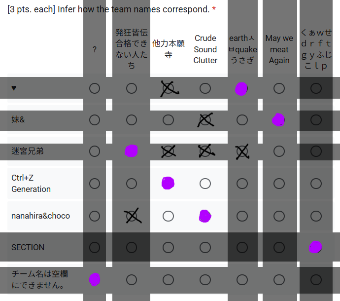

Mutual Fumen 2
Result
| Rank | Team | Members | Score | |
|---|---|---|---|---|
| 1 | チーム名は空欄にできません。 ? |
Limite | 妖夢 | 122.0 |
| 2 | 迷宮兄弟 発狂皆伝合格できない人たち |
zdazwt | Atharnal | 107.5 |
| 3 | nanahira&choco earthㅅㅂquakeうさぎ |
七海 | tyrcs | 103.5 |
| 4 | 妹& May we meat Again |
AYhaz | Mary_Sue | 99.0 |
| 5 | SECTION くぁｗせｄｒｆｔｇｙふじこｌｐ |
茨木童子の腕 | Seori | 91.0 |
| 6 | ♥ 他力本願寺 |
Decimal | Lanait | 81.5 |
| 7 | Ctrl+Z Generation Crude Sound Clutter |
LuvTek | И | 63.5 |
| Special Guest | Arvion | 2RLZ | Triforce | |
Detailed Score
자세한 결과는 이쪽에서 볼 수 있습니다.
詳しい結果はこちらからご覧いただけます。
You can see the detailed results here.
ViewParticipant Review
2RLZ
약 4년 만에 다시 인사를 드리게 되었습니다. 그동안 개인적인
사정으로 차분 제작에 힘을 쏟지 못한 점이 늘 아쉬웠는데, 이번
기회를 통해 다시 찾아뵙게 되어 무척 감격스럽습니다.
사실 이벤트 기획이 발표된 시점부터 참가를 고민했으나, 일정과 작업물의 완성도 문제로 자칫 팀원분께 의도치 않게 부담을 드릴까 염려되어 한 차례 참가를 고사했었습니다. 그러나 지인의 격려와 응원 덕분에 용기를 내어 스페셜 팀으로 합류하게 되었고, 이 자리를 빌려 격려해주신 지인과 뒤늦게라도 참가를 허용해주신 주최자 여러분께 깊이 감사드립니다.
앞으로도 여건이 허락한다면 차분 제작에 조금씩 힘써보고자 하며, 비록 부족한 점이 많지만 따뜻한 관심 부탁드립니다. 아울러 지인인 浮波柚葉 씨도 최근 차분 제작에 관심을 갖고 몇몇 작업을 진행 중입니다. 다만 컴퓨터 활용에 서투른 탓에 배포나 영상 제작 과정에서 제가 대신 도움을 드리고 있는데, 이분께도 많은 격려와 관심을 부탁드리고 싶습니다.
끝으로, 이번 대회를 위해 애써주신 모든 분들께 감사드리며, 수고 많으셨습니다.
사실 이벤트 기획이 발표된 시점부터 참가를 고민했으나, 일정과 작업물의 완성도 문제로 자칫 팀원분께 의도치 않게 부담을 드릴까 염려되어 한 차례 참가를 고사했었습니다. 그러나 지인의 격려와 응원 덕분에 용기를 내어 스페셜 팀으로 합류하게 되었고, 이 자리를 빌려 격려해주신 지인과 뒤늦게라도 참가를 허용해주신 주최자 여러분께 깊이 감사드립니다.
앞으로도 여건이 허락한다면 차분 제작에 조금씩 힘써보고자 하며, 비록 부족한 점이 많지만 따뜻한 관심 부탁드립니다. 아울러 지인인 浮波柚葉 씨도 최근 차분 제작에 관심을 갖고 몇몇 작업을 진행 중입니다. 다만 컴퓨터 활용에 서투른 탓에 배포나 영상 제작 과정에서 제가 대신 도움을 드리고 있는데, 이분께도 많은 격려와 관심을 부탁드리고 싶습니다.
끝으로, 이번 대회를 위해 애써주신 모든 분들께 감사드리며, 수고 많으셨습니다.
妖夢
여독이 어느 정도 풀린 김에, 잠시 시간을 내어 이번 대회에 대한
후기를 적어봅니다.
파트너였던 Limite님께서 저보다 훨씬 꼼꼼하게 세부를 수정하고 완성해 주신 덕분에, 결과적으로 제 정체가 드러나지 않도록 자연스럽게 유도되었고, 평소 제가 자주 쓰는 ‘후반 순간발광’ 성향도 잘 가려졌습니다. 물론 이를 제대로 간파한 팀도 한두 곳은 있었습니다.
대회 중 인상 깊었던 순간은, 누가 봐도 특정 제작자라고 느낄 수 있을 정도로 자기 색깔을 강하게 드러낸 차분을 플레이했을 때였습니다. 그 확실한 개성이 부럽기도 했고, 언젠가는 저도 그런 차분 제작자가 되고 싶다는 생각이 들었습니다.
참여 동기
이번 대회에 참가한 이유는 제 차분의 성격이 다른 사람과 함께했을 때 어떤 결과물이 나올지에 대한 기대와, 실험적인 시도를 해보고 싶었기 때문입니다. 단순히 재미를 위해서이기도 했지만, 더 많은 경험을 쌓고 싶었고 다른 제작자분들과 교류할 기회도 원했습니다. 또한 평소부터 발광 계열처럼 다채로운 패턴을 제작해보고 싶다는 바람도 있었습니다.진행 과정
차분을 기획할 때는 데님 트릴 난타나 소규모 대칭 구조 같은 성격을 살리되, 전체적으로는 패턴 밸런스와 체감 난이도를 고려하는 데 신경을 썼습니다. 다만 제 경우, 아무리 어렵게 만들어도 결국 제가 소화할 수 있는 수준에서 난도가 형성되기 때문에, 이를 감안하고 제작하다 보면 난이도가 다소 들쭉날쭉하더라도 일정 수준의 밸런스는 자연스레 유지된다는 확신이 있었습니다. 그래서 난이도나 밸런스 자체에 대해서는 크게 고민하지 않았습니다.파트너였던 Limite님께서 저보다 훨씬 꼼꼼하게 세부를 수정하고 완성해 주신 덕분에, 결과적으로 제 정체가 드러나지 않도록 자연스럽게 유도되었고, 평소 제가 자주 쓰는 ‘후반 순간발광’ 성향도 잘 가려졌습니다. 물론 이를 제대로 간파한 팀도 한두 곳은 있었습니다.
대회 중 인상 깊었던 순간은, 누가 봐도 특정 제작자라고 느낄 수 있을 정도로 자기 색깔을 강하게 드러낸 차분을 플레이했을 때였습니다. 그 확실한 개성이 부럽기도 했고, 언젠가는 저도 그런 차분 제작자가 되고 싶다는 생각이 들었습니다.
결과와 소감
솔직히 말씀드리면, 참가자들 중 몇몇 분을 제외하면 난이도표에 수록되지 않은 차분들을 이미 접해본 경험이 있었기에, 처음부터 높은 순위를 노리고 참가했습니다. 그러나 단순히 성적만이 아니라, 다른 제작자분들의 개성을 직접 확인하고 플레이할 수 있었다는 점이 큰 의미였습니다. 이번 경험을 통해 ‘나만의 개성을 어떻게 정의하고, 어떻게 확고히 해나갈 것인가’라는 과제를 다시금 자각하게 되었습니다.앞으로의 다짐
이번 이벤트를 통해, 앞으로는 제 차분이 보다 뚜렷한 개성과 색깔을 드러낼 수 있도록 발전해 나가고 싶습니다. 부족한 부분을 보완해 주신 파트너 Limite님께 감사드리며, 함께 참여해주신 모든 분들께도 진심으로 감사드립니다.茨木童子の腕
PRELIMINARY
I got matched with Seori! Who I know as Seori / Rain's Avenue from music. Good piano music! Did not know they were also a sabun charter! Working with them was a smooth and fun time, and I really enjoyed myself.So, elephant in the room: I have never released an insane (i.e. real proper 発狂) sabun before. Gimmick stuff, VERYHARD stuff, and under the 茨木童子の腕 alias even an hour-long VERYHARD chart, sure, but no, I was basically flying stealth throughout this entire event. Which was a very natural advantage in a way! But I also imagine it made it tricky for people to surmise how the hell they were even going to start to guess where I was.
That said! In both rounds I genuinely thought I might've given myself away in that department. Thus:
PRIMARY, ROUND 1
ProjectG - A Gamer Never Showed Up For PABAT. This Is What Happened To His Brain. [!]Charting: Seori
Sabun BGA: 茨木童子の腕
So this was a chart Seori had ready and proposed submitting for the first round, which I was definitely fine with, and then I looked inside and realised I had nothing to add to it because this level of charting is well and truly beyond me, but it would be kind of against the spirit of a collaborative sabun event if we just submitted a sabun without any collaboration?
So I took the tack of collaborating by providing a sabun BGA instead. That's not the original BGA that plays on our chart! There is no original BGA that plays on the chart, even, it's a BGI! (Although there is an official (I think) BGA now by Black201 and 潮音きつね, which I don't know if it's included now, but it's very good: https://www.youtube.com/watch?v=NgZSS7MvDDw)
As for the contents of the BGA itself, I image-searched "monster energy gamer peripherals" and painted from reference the first image I found that I thought would be hilariously inexplicable to paint for no reason on an insane sabun, which was the gamer chair. Which I painted very painstakingly! And then I went to export the timelapse and the timelapse didn't even last fifty seconds so I went "oh, shit, I have to draw something else too" and then I went back and picked the HEADPHONES image and drew that one too. I fucking love the HEADPHONES image. I like to think people saw out of the corner of their eye the word HEADPHONES take shape and were completely baffled. Then that wasn't long enough and I had to draw another image so I picked what was presumably a thumbnail from a YouTube unboxing video of a gamer mouse. Then that still wasn't long enough so I finally searched "monster energy gamer merchandise" and drew a random rubber keychain and that got me just over the line.
I think the whole process took like two hours in total. Or three. My hand was hurting by the end either way.
As for why I thought this would give me way, my reasoning was "who the hell else would come up with an original BGA where they speedpaint-recreate THESE specific subject images? Surely you can figure it has to be me by process of elimination and me being foreign, right?" But I guess if you didn't realise that BGA was original to the sabun (or you were playing with BGA off) then it wouldn't twig.
PRIMARY VOTING
I'll be honest I locked onto AYhaz immediately but had no clue about anyone else. I can't play insane charts either, I top out at around low ☆11 and that's on keyboard! Score-wise we just gave everyone 10s. We Are All Winners.Copypaste of my thoughts:
[17:51] EmeliaK: Notes on my conjectures for first round inference:
- Stella Story [Welcome to Stella]
- Has to be by someone who's both familiar with Stella and loves it enough to make a whole tribute sabun for it, and I *know* not everyone in this event has that kind of love for Stella.
- hericstreams ↓↑
- All of this *screams* AYhaz. The soflan and patterns are a dead ringer for him, which others could imitate, but then the difficulty is specifically rated against *two* disused insane tables, and I dunno if someone would think to do that if they were trying to camouflage as him. The song pick, I'm not sure, but maybe that came from his teammate. (Also the team name seems like one he'd like)
- 夢幻泡影 [NightMare]
- Chart feels too... simple? Straightforward? For certain people to have worked on it, but could be anyone else as far as I know, though. Mmmmaybe Lanait would like this song?
- Nightlight Region [Mulsanne Straight], satellite [vanguard]
- No ideas. Former song is pretty famous, the latter song is a deep cut, so it might've been a pick from one each. The charting is... pretty orthodox Stellaverse for the most part, which includes some people and rules out some others. That said, the way [vanguard] maps the snares to 6 for a while seems distinctive.
- みこナス オルタナテぃぶ (Otoge- ba-jyon) [Cute Cute smth]
- Maybe LuvTek's in here? Shrug.
- A Gamer Never Showed Up For PABAT. This Is What Happened To His Brain. [!]
- Hi!
- KVEYKVA [差分名は空欄にできません。]
- Dunno. Very orthodox song pick, though. Big BOF hitter.SECONDARY, ROUND 2
RearDawn remixed by LU - Backpacker(remix) [/]Charting:
#000-028: 茨木童子の腕
#029-036: Seori
#037-060: 茨木童子の腕 (If I have any regrets, it's that maybe #037-052 was a little TOO repetitive? But this is also a very zen kind of chart so I'm fine with it in its own way, it's just a little foreign in a 7K setting.)
#061-076: Seori
#077-084: 茨木童子の腕
This one fixates on repetition, HARD judge and low TOTAL. Which is already a very 5K way of thinking and the only notable feature you could glean about me from the venue profiles is I'm a primarily 5K charter so I thought for sure this was already suspicious scent-wise!
This time I handled the majority of the charting, but where the high density could come in I left it to Seori since that was naturally their domain. Another of the chart's tics is the alternating snares on 6 and 4, which I also tweaked a little in the latter half of Seori's second section (with permission) to keep consistent.
Song choice was also mine. I was really struggling for what to pick - something in my favourites folder that was older, and not something that had a bunch of sabuns already, so ねぇ？メイドさんはみんな忠実だと思う？ was out (sadly) and oceanbird was REALLY out, and I started taking a crack at Neo Atlantis (Forgotten Place Mix) but after arranging the blank file didn't think it would be that good for a collab after all, and then I started taking a crack at Emerald by Wired7i (and fell in love with the song all over again in the process) and didn't think THAT would be good for a collab after I'd arranged its blank file (I might work on both of these solo in the future), and this went on until I finally hit LU's Backpacker remix from 無名戦対抗戦 (MumeiVS) which as far as I can tell has never had a sabun before and I rolled with that. Also sidenote that I didn't think about until after but AYhaz had an entry in 無名戦対抗戦 too so that would've been really fucked up if I'd chosen that.
SECONDARY VOTING
I think I was even less use than the first time.
[23:53] EmeliaK: Let's have a look at Round 2. Once again, not going to have many thoughts on author guesses...
- ♥
- **MM (feat. shishishiena) - HIGHRISE [Goodbye, SATELLITE]**: I'm... not convinced by this charting, really. A lot of ignoring the flow of the song only to pay attention to it eight bars later. I like the LNs but they don't commit nearly enough to them to let them sing as a charting element. Small shame since I do like this song. Ah well.
- 妹&
- **海秋 - 星の海に照らされて [175-…-190]**: Holy shit it's AYhaz. Song choice, charting choices, "DIFFICULTY: ★★鷺" - if this isn't AYhaz, then damn, someone's a natural-born chimera. This one's good.
- 迷宮兄弟
- **椿. - Myosotis [sylvatica]**: Ooh, I like this one. Very focused. (If I didn't know better, I would guess *I* participated in this.)
- Ctrl+Z Generation
- **Zris - Tiny Leda [TailSeeker]**: Not really my taste, but I super respect the commitment to the charting style. Good one.
- **Team ε - E3 bga [Squad ζ]**: Wow, everyone's coming out with the freak picks this round. Hell yeah. Dunno who it is but wow, there's some freak shit going on with STOPs in this isn't there. Nice chart.
- nanahira&choco
- **kanoryo - Fractal(i)xis [Cute Cute HOLOMORPHIC DYNAMICS]**: Satisfyingly geometric to look at.
- SECTION
- **RearDawn remixed by LU - Backpacker(remix) [/]**: Hi!
- チーム名は空欄にできません。
- **Orange Vox+ ft.AKA - reveL [7 Ex]**: Chart's standard, but good. Wow, how did I not know this song existed before?
- Arvion
- **IKALRE - nenuphar [nympheas]**: Oh, now this is charting with *discipline.* I like this one a *lot.* And it's one I could actually play! I'm guessing uhhhh fffffffuck it Seraphin is in this.
- **paraoka/yusuke - center piercing [3C 273]**: Classy pick. Yeah, I wouldn't be surprised if one of the people in this was Seraphin. Dunno about the other though.FINAL INFERENCE

I've, uh, been playing sudoku recently. See attached figure. I'm happy we managed to do second-best on this phase as a result! Success.
[15:36] EmeliaK: Main guiding assumption is that a team wouldn't make a bold guess about their own team only to retract it later.
[15:37] EmeliaK: (Also getting to 妹& halfway through my inference reminded me "May we meat Again" is just a really AYhaz name.)THOUGHTS
This was fun! Somehow I scraped through with /nobody/ guessing me on SECTION so per my teammate Seori's comments that officially makes me the most unguessable participant in all of Mutual Fumen 2. Sorry not sorry (but kind of sorry (but not really okay maybe a little)). Hope to see you all again in the future. Maybe I'll have even published a solo insane 7K sabun by then!obj:茨木童子の腕 (イベライ)
Decimal
・挨拶
どうも。Decimalです。相変わらず腹痛が出たり出なかったりしてます。
差分企画、毎度お世話になっております。
今回のMutual Fumen 2、合作差分企画に参加するのは初めてだったので楽しかったです！
今回の私のチームは、♥でした！（♡表記になってましたね）
Lanaitさんと私Decimalのチーム、かなり私の方はバレバレでしたね。
マジか～...。隠すつもりも、隠す技術もそんななかったんですけどもね...ハイ...。
他力本願寺はウチのネーミング、♥がLanaitさんのネーミングですね。
・Stella Story
Lanaitさんの選曲です。stella storyだからstella譜面にしたい、というコンセプトがあります。
ノーツ配置に関してはディレイとかで増やそうかなあと考えてたんですが、
Lanaitさんが曲アレンジをやってくれまして、これのお陰でかなり譜面が作りやすかったです。
結局ディレイを置くことなく、横に広くてちょっと連打が混じる譜面が出来上がりました。
難しくなりすぎないように、かといってst0未満にはならないよう譜面調整しました。
休憩も挟みつつ、微縦も程々に歯応えのある乱打に仕上がったと思います。
Welcome to Stella、という感じでst0挑戦者を出迎えたいのですが、
もしかしたらちょっと強かったかも...ギリst0で通したいと思います。ハイ。
・HIGHRISE
私の選曲です。ニュージェネ通常表埋めてる際に出会いまして、かなり好みの曲だったから、が理由ですね。
もしかしたら選曲チョイスでバレたのか...？って今になって思います。
Stella Storyの差分をst0相当で作ろう！というのがLanaitさんの提案だったので、
じゃあこっちはsl12のボス相当の難易度にしちゃおう！ってのがコンセプトだったりします。
...譜面制作時に体調を壊してしまい、テストプレイできてなかったんですけど、
...ギリsl12ってことで許してもらえませんかね。
Goodbye, SATELLITEで譜面のほうがstella行っちゃいませんかコレ。
閑話休題。譜面制作の方なのですが、大分手癖で配置を置いています。
元々ガチ押し系にしようという構想はあったのでそれを形に。
高速乱打が置けそうだな～って思ったところはキー音が無くて断念せざるを得ませんでした...。
大分無茶のある無音ノーツ使いを今回もやってしましました。
打鍵感を意識して譜面は作っているので、なるべく違和感がなければいいなとは思ってます。
・まとめ
Mutual Fumen 2、面白い企画でした！Lanaitさんと差分を作るという貴重な体験を戴けました...!
どういう譜面作るか、曲どうするか、チーム名どうしようか、推論なんもわかんないぞ...
みたいなことをワイワイ相談するのが楽しかったです。
またこういう合作差分企画あったら参加したいです。
私Decimal自身、平時でも合作のお誘いがあれば是非やらせていただきます。
今後とも私のDecimal差分(棟方愛海名義差分も是非)をよろしくお願いいたします...!
Lanait
初めまして、Lanaitと申します。
Mutual Fumen 2 改めてお疲れ様でした！
私自身こういった評価制の差分企画には初めて参加しました。
その上合作でかつ偽名というのも初めてだったので、文字通り初めてに埋もれた状態でした。ぐへー。
今回Decimalさんとともに作成した差分に関して、個人的な思いも含めてこの場で振り返りたいなと思います。
お付き合いいただけますと幸いです。
現代の発狂BMSに合いすぎるタイトルだなと以前から思っており、どこかで差分作成したいなと考えていました。
ただ私自身stella譜面にあまり造詣が深くないのと、こういった譜面のコンセプトは私の思想から少し遠い位置にあるという思いでどうも手付かずでした。
だからこそこの偽名企画で採用するにはもってこいであり、今回は差分を作成しました。
譜面の構成としてはBPM帯と難易度を考えオーソドックスな微縦乱打を意識。
ただ元の曲の音がかなり少ないなと感じており、これは単に横に広げるだけでは難しい打鍵感の観点で解決できない問題でした。
元の曲とこの差分を聴き比べていただければわかると思いますが、かなりの量の音を足しています。これが一番大変だったも！
最終的には打鍵感強めの楽しいstella譜面になったのではと思っています。
st0にしてはむずいかも！
この曲自体は私も以前にプレイしたことがありましたが、そのときはBGAが付いてなかったなと。
差分名は完全にStella Storyの対です。
２つ出す差分企画なので、こういうのがあってもいい。
譜面構成としてはいわゆるガチ押し系でしょうか。
こちらの曲も元の音が少なめでしたが、キックのアタックが強めなこともありその点意識したおかげで十分な打鍵感は演出できたのではないでしょうか。
終盤にあるBGAの謎ダンス好き。
sl12にしてはちょっと難しいかも！
以上が今回携わった差分です。
長いようであっという間のMutual Fumen 2でした。
推論難しかった……
改めまして一緒に差分を作ってくれたDecimalさん、そして主催のLuvTekさんとИさん、参加者の皆様ありがとうございました！
Lanait
Mutual Fumen 2 改めてお疲れ様でした！
私自身こういった評価制の差分企画には初めて参加しました。
その上合作でかつ偽名というのも初めてだったので、文字通り初めてに埋もれた状態でした。ぐへー。
今回Decimalさんとともに作成した差分に関して、個人的な思いも含めてこの場で振り返りたいなと思います。
お付き合いいただけますと幸いです。
Stella Story [Welcome to Stella]
この曲自体は私からDecimalさんに持ちかけました。現代の発狂BMSに合いすぎるタイトルだなと以前から思っており、どこかで差分作成したいなと考えていました。
ただ私自身stella譜面にあまり造詣が深くないのと、こういった譜面のコンセプトは私の思想から少し遠い位置にあるという思いでどうも手付かずでした。
だからこそこの偽名企画で採用するにはもってこいであり、今回は差分を作成しました。
譜面の構成としてはBPM帯と難易度を考えオーソドックスな微縦乱打を意識。
ただ元の曲の音がかなり少ないなと感じており、これは単に横に広げるだけでは難しい打鍵感の観点で解決できない問題でした。
元の曲とこの差分を聴き比べていただければわかると思いますが、かなりの量の音を足しています。これが一番大変だったも！
最終的には打鍵感強めの楽しいstella譜面になったのではと思っています。
st0にしてはむずいかも！
HIGHRISE [Goodbye, SATELLITE]
これはDecimalさんから提案いただいた曲でした。この曲自体は私も以前にプレイしたことがありましたが、そのときはBGAが付いてなかったなと。
差分名は完全にStella Storyの対です。
２つ出す差分企画なので、こういうのがあってもいい。
譜面構成としてはいわゆるガチ押し系でしょうか。
こちらの曲も元の音が少なめでしたが、キックのアタックが強めなこともありその点意識したおかげで十分な打鍵感は演出できたのではないでしょうか。
終盤にあるBGAの謎ダンス好き。
sl12にしてはちょっと難しいかも！
以上が今回携わった差分です。
長いようであっという間のMutual Fumen 2でした。
推論難しかった……
改めまして一緒に差分を作ってくれたDecimalさん、そして主催のLuvTekさんとИさん、参加者の皆様ありがとうございました！
Lanait
Mary_Sue
A blunder at the right moment is better than cleverness at the
wrong time
Seori
전혀 접점이 없던 분과의 합작인 만큼 새로운 경험이었습니다. 이런
이벤트를 마련해준 주최자 분들과 1달동안 저와 같이 차분 제작과
추측에 참여해준 茨木童子の腕님께 감사드립니다.
Triforce
BMS 패턴제작자 Triforce입니다. BMS 패턴 제작 자체는 2014년쯤부터 시작을 했었습니다.
뭔가 꾸준한 작업물이 있었으면 좋을텐데, 최근에 안 만들다보니 이렇게 활동하는 것도 어색하네요.
BMS에 손 뗀지 어언 700일이 넘어가는 중입니다. 컴퓨터가 포맷에 의해 BMS가 다 날아갔고, 다시 세팅하는 것은 기나긴 시간이 걸릴 것이었기에 잠정적으로 손을 떼고 있었습니다. 그래서 최초에 Mutual Fumen 2 대회 참가 제안이 왔을 때, 고사를 했었습니다.
하지만 우연한 기회로, 2RLZ님 측에서 참가해보지 않겠냐는 제안을 해서 정말 홧김에 수락하게 되었습니다. 간만에 패턴을 만드니 준비가 좀 오래 걸렸고, 노래 선정도 기초지식 없이 새로 정해야 해서 시간이 많이 걸렸네요.
여러 곡이 있었는데, 2RLZ님 측은 락 장르 계열을 원했고, 저는 차분이 많이 없는 것을 목표로 했습니다. 원래는 이것들보다 더 많은 곡이 있었지만, 명단이 기억나지는 않네요... 이런 건 왜 기록을 안 해두는지.
Mutual Fumen 이벤트의 특성상 참가자 정보가 있어야 추리가 되는데 저희의 정보가 하나도 없기 때문에 그에 맞는 정보를 일부 제공하기 위해 저는 일부러 올드한 곡(BOF2011이라는데, 저는 몰랐습니다...)을 선곡했습니다.
저는 가능하면 최초의 의도를 존중하고자(정말 제가 원하지 않는 모양이 있음에도) 가능한한 이런 언급은 줄이고, 패턴의 개성을 존중하고자 했습니다. 사람마다 다르겠지만, 그게 제가 생각하는 mystery "fellow"였습니다.
의외로 작업에서 제일 어려웠던 것은 최초의 blank 파일 작성이었습니다. 두 곡 모두 blank 파일이 없었거든요. 직접 만들어야 했는데, 하필 두 곡 다 .bmx 파일마다 키음 개수가 다릅니다. 심지어 center piercing은 아예 300개 넘게 차이가 났던거 같네요.
원래같으면 SPH나 SPN으로 작업하는데, 진짜 어쩔 수 없이 이 곡만 SPE로 작업했습니다.
곡이 들리는 소리에 비해 키음이 고르기 어려워 고생했습니다. 목표에서 난해한 박자를 이용해 난이도를 높이는 방식을 채용하자는 이야기가 있었고, 이를 바탕으로 작업을 하려고 했습니다만 결론적으로는 난이도는 높게 나오지 않았네요.
반복되는 멜로디 중 최초반(#001-#013)을 2RLZ님이 담당하며 시작하려 했으나, 난이도 설정과 어려운 곡의 느낌으로 인해 제작이 어렵겠다는 이야기가 있어 제가 분위기를 잡고 들어갔고, 이후 #70부터 2RLZ님이 담당하게 되었습니다.
제가 느낀 전반부는 드럼을 조금 더 살리는 방향이었고, 후반부는 피아노쪽을 살리는 방향이었다고 느껴지네요. Math rock이라는 장르의 특징과 최초의 요청(난해한 박자를 이용하자)을 잘 드러나게끔 드럼 박자를 많이 넣어서 치는 사람이 손이 꼬이게끔 하는 것이 목표였습니다.
nenuphar에 비해 명확하게 곡의 파트가 나눠져있는 편이고, 하이라이트와 임팩트 있는 구간이 명확히 있다 보니 제작에는 훨씬 수월했습니다. 곡의 하이라이트(#54)까지는 2RLZ님이, 이후(#55)는 제가 담당했습니다. 전반적으로 타격감을 살리는 것을 목표로 했습니다.
키음이 아주 없는 곡인데 이 와중에 32비트 사운드가 있는 것이 사용을 안 할 수도 없어서, 타격감을 살리고 무키음을 사용해서 조절했습니다.
제 파트(사비 이후, #55~)에 대한 이야기만 조금 하자면, 사실 원본은 이것보다 더 어려운 8마디 트릴의 연속이었습니다. 앞이 난이도가 채워지지 않아서 트릴을 분해하고 정배치 기준 눈에 잘 들어오는 난타 모양으로 개조했습니다. 밀도도 많이 조절하고, 덕분에 플레이하기 좋은 느낌이 아니었을까 싶네요.
두 차분에서도 사실 저의 힌트가 조금씩 있었습니다. 저는 차분에서 무키음을 사용할 때 가능하다면 무조건 ZX를 사용합니다. 만약 이 부분이 점수에 들어간다거나, 정말로 누군지 맞추고 싶다거나 해서 주최측의 힌트(이전에 참가한 적 이력이 있음)와 조합하여 차분까지 뜯어봤다면, 생각보다 저라는 걸 압축할 수 있지 않았을까요?
또 제가 뭐라고 "우리가 누군지 힌트는 있어야 하지 않겠냐?" 같은 생각을 하면서 이전 대회인 Mutual Fumen에서는 열심히 숨겨뒀던 힌트를, 이번에는 뭔가 조금씩 뿌리고 다녔었습니다.
(이 와중에 readme 파일은 한국인인거 숨기려고 ANSI로 코딩을 새로 했습니다...).
뭔가 저의 특징을 어필하고 싶다는 생각이 계속 있었나보네요. 다른 분들의 BMS도 플레이해보고픈데, 세팅을 해서 플레이하기에도 난이도가 어려워서... 조금 시간이 걸리겠지만 이후에라도 꼭 플레이해보겠습니다.
제가 안 만드는 사이에 새롭게 차분을 만드시는 분이 등장하셨고, 기존에 차분을 짜시던 분도 보여서 반가웠습니다. BMS 이벤트가 아닌 패턴 이벤트에도 이렇게 참여해주시면서 활성화되는 것을 보니 아직은 이 판이 더 잘 돌아갈 것 같네요.
저도 다시 BMS 파일을 모으고 있고, 조금씩 활동을 재개할 예정입니다. 그 때는 오늘만큼, 혹은 오늘보다도 더 좋은 퀄리티의 차분을 만들 수 있도록 노력하겠습니다.
BMS에 손 뗀지 어언 700일이 넘어가는 중입니다. 컴퓨터가 포맷에 의해 BMS가 다 날아갔고, 다시 세팅하는 것은 기나긴 시간이 걸릴 것이었기에 잠정적으로 손을 떼고 있었습니다. 그래서 최초에 Mutual Fumen 2 대회 참가 제안이 왔을 때, 고사를 했었습니다.
하지만 우연한 기회로, 2RLZ님 측에서 참가해보지 않겠냐는 제안을 해서 정말 홧김에 수락하게 되었습니다. 간만에 패턴을 만드니 준비가 좀 오래 걸렸고, 노래 선정도 기초지식 없이 새로 정해야 해서 시간이 많이 걸렸네요.
곡 선정
최초에는 2RLZ님과 제가 곡을 여러개 선정 후, 하루 만나서 선정 작업을 하기로 했습니다. 모든 곡을 들어본 후 한 곡을 선정하는 것을 목표로 하였으나, "2개 다 해도 되겠는데?" 싶어서 두 곡을 다 선정했습니다.여러 곡이 있었는데, 2RLZ님 측은 락 장르 계열을 원했고, 저는 차분이 많이 없는 것을 목표로 했습니다. 원래는 이것들보다 더 많은 곡이 있었지만, 명단이 기억나지는 않네요... 이런 건 왜 기록을 안 해두는지.
Mutual Fumen 이벤트의 특성상 참가자 정보가 있어야 추리가 되는데 저희의 정보가 하나도 없기 때문에 그에 맞는 정보를 일부 제공하기 위해 저는 일부러 올드한 곡(BOF2011이라는데, 저는 몰랐습니다...)을 선곡했습니다.
차분 설명
기본적으로는 전반과 후반으로 나뉘어 작업이 진행되었고, 4-5일간 주고받아서 만드는 식으로 작업했습니다. 제가 먼저 초안을 작성했고, 이를 2RLZ님이 이어받아서 만들고, 이후 난이도 조절 및 TOTAL 조정 등으로 작업했습니다.저는 가능하면 최초의 의도를 존중하고자(정말 제가 원하지 않는 모양이 있음에도) 가능한한 이런 언급은 줄이고, 패턴의 개성을 존중하고자 했습니다. 사람마다 다르겠지만, 그게 제가 생각하는 mystery "fellow"였습니다.
의외로 작업에서 제일 어려웠던 것은 최초의 blank 파일 작성이었습니다. 두 곡 모두 blank 파일이 없었거든요. 직접 만들어야 했는데, 하필 두 곡 다 .bmx 파일마다 키음 개수가 다릅니다. 심지어 center piercing은 아예 300개 넘게 차이가 났던거 같네요.
원래같으면 SPH나 SPN으로 작업하는데, 진짜 어쩔 수 없이 이 곡만 SPE로 작업했습니다.
nenuphar [nympheas] (선곡자: 2RLZ)
nenuphar는 프랑스어로 수련을 의미합니다. 이 곡 제목을 힌트로, 프랑스의 유명한 화가인 클로드 모네의 Nymphéas en fleur(https://en.wikipedia.org/wiki/Nymph%C3%A9as_en_fleur)라는 유화 작품에서 차분명을 착안했습니다.곡이 들리는 소리에 비해 키음이 고르기 어려워 고생했습니다. 목표에서 난해한 박자를 이용해 난이도를 높이는 방식을 채용하자는 이야기가 있었고, 이를 바탕으로 작업을 하려고 했습니다만 결론적으로는 난이도는 높게 나오지 않았네요.
반복되는 멜로디 중 최초반(#001-#013)을 2RLZ님이 담당하며 시작하려 했으나, 난이도 설정과 어려운 곡의 느낌으로 인해 제작이 어렵겠다는 이야기가 있어 제가 분위기를 잡고 들어갔고, 이후 #70부터 2RLZ님이 담당하게 되었습니다.
제가 느낀 전반부는 드럼을 조금 더 살리는 방향이었고, 후반부는 피아노쪽을 살리는 방향이었다고 느껴지네요. Math rock이라는 장르의 특징과 최초의 요청(난해한 박자를 이용하자)을 잘 드러나게끔 드럼 박자를 많이 넣어서 치는 사람이 손이 꼬이게끔 하는 것이 목표였습니다.
center piercing [3C 273] (선곡자: Triforce)
BGI를 보면, 소녀의 뒤편 배경이 우주인 것을 볼 수 있습니다. 곡 제목인 가운데에 뚫리는 느낌을 주는 우주의 무언가를 생각하고 준비하기로 했습니다. 그 결과, 은하의 중심에 블랙홀이 위치하는 퀘이사가 적합하다고 생각했고, 3C 273(https://ko.wikipedia.org/wiki/3C_273)은 이들 중 최초에 발견된 퀘이사 중 하나라고 하네요.nenuphar에 비해 명확하게 곡의 파트가 나눠져있는 편이고, 하이라이트와 임팩트 있는 구간이 명확히 있다 보니 제작에는 훨씬 수월했습니다. 곡의 하이라이트(#54)까지는 2RLZ님이, 이후(#55)는 제가 담당했습니다. 전반적으로 타격감을 살리는 것을 목표로 했습니다.
키음이 아주 없는 곡인데 이 와중에 32비트 사운드가 있는 것이 사용을 안 할 수도 없어서, 타격감을 살리고 무키음을 사용해서 조절했습니다.
제 파트(사비 이후, #55~)에 대한 이야기만 조금 하자면, 사실 원본은 이것보다 더 어려운 8마디 트릴의 연속이었습니다. 앞이 난이도가 채워지지 않아서 트릴을 분해하고 정배치 기준 눈에 잘 들어오는 난타 모양으로 개조했습니다. 밀도도 많이 조절하고, 덕분에 플레이하기 좋은 느낌이 아니었을까 싶네요.
두 차분에서도 사실 저의 힌트가 조금씩 있었습니다. 저는 차분에서 무키음을 사용할 때 가능하다면 무조건 ZX를 사용합니다. 만약 이 부분이 점수에 들어간다거나, 정말로 누군지 맞추고 싶다거나 해서 주최측의 힌트(이전에 참가한 적 이력이 있음)와 조합하여 차분까지 뜯어봤다면, 생각보다 저라는 걸 압축할 수 있지 않았을까요?
참가 후기
간만에 차분 제작을 하니 고민할 것도 많았고, 재미도 있었습니다. 2RLZ님이랑은 원래 알고 지내던 사이였음에도 합작은 처음이었습니다. 그래서 또 새로운 경험을 하나 했다는 느낌이었습니다.또 제가 뭐라고 "우리가 누군지 힌트는 있어야 하지 않겠냐?" 같은 생각을 하면서 이전 대회인 Mutual Fumen에서는 열심히 숨겨뒀던 힌트를, 이번에는 뭔가 조금씩 뿌리고 다녔었습니다.
(이 와중에 readme 파일은 한국인인거 숨기려고 ANSI로 코딩을 새로 했습니다...).
뭔가 저의 특징을 어필하고 싶다는 생각이 계속 있었나보네요. 다른 분들의 BMS도 플레이해보고픈데, 세팅을 해서 플레이하기에도 난이도가 어려워서... 조금 시간이 걸리겠지만 이후에라도 꼭 플레이해보겠습니다.
제가 안 만드는 사이에 새롭게 차분을 만드시는 분이 등장하셨고, 기존에 차분을 짜시던 분도 보여서 반가웠습니다. BMS 이벤트가 아닌 패턴 이벤트에도 이렇게 참여해주시면서 활성화되는 것을 보니 아직은 이 판이 더 잘 돌아갈 것 같네요.
저도 다시 BMS 파일을 모으고 있고, 조금씩 활동을 재개할 예정입니다. 그 때는 오늘만큼, 혹은 오늘보다도 더 좋은 퀄리티의 차분을 만들 수 있도록 노력하겠습니다.
zdazwt
안녕하세요, 迷宮兄弟팀의 zdazwt입니다.
우선 이벤트를 주최해주신 팍수님과 엠스핀님께 감사의 말씀을 드립니다.
이번이 이런 이벤트에 처음 참여한 거라 어떤 식으로 진행될지 조금 걱정했는데, 생각보다 부담 없이 즐길 수 있어서 좋았습니다. 덕분에 재미있게 참여할 수 있었고, 다음에 또 이런 이벤트가 열린다면 참여할듯 하네요.
글 솜씨가 부족해 길게는 못쓰고 짧게나마 소감을 남깁니다.
그럼 zdazwt이였습니다 글 읽어주셔서 감사합니다.
우선 이벤트를 주최해주신 팍수님과 엠스핀님께 감사의 말씀을 드립니다.
이번이 이런 이벤트에 처음 참여한 거라 어떤 식으로 진행될지 조금 걱정했는데, 생각보다 부담 없이 즐길 수 있어서 좋았습니다. 덕분에 재미있게 참여할 수 있었고, 다음에 또 이런 이벤트가 열린다면 참여할듯 하네요.
글 솜씨가 부족해 길게는 못쓰고 짧게나마 소감을 남깁니다.
그럼 zdazwt이였습니다 글 읽어주셔서 감사합니다.
LuvTek
기획 의도
DARKSABUN에서 처음으로 주최한 이벤트인 Mutual Fumen이 5주년을 맞이하여, 후속 이벤트를 진행하게 되었습니다.제작 과정에서는 팀메이트와 교류, 추론 과정에서는 다른 참가자들의 차분 스타일을 파악 및 이해를 의도한 이벤트로,
5년이 지난 현재 멤버들이 어느 정도 교체된만큼, 비슷한 규칙으로도 새로운 경험을 선사하는 이벤트가 되었기를 바랍니다.
사실 5년 전에는 5년 넘게 이벤트를 주최할 것이라 예상을 못했었고 후속작은 염두해두지 않았으나,
Mutual Fumen 및 Sabun in DARK를 진행하면서 받은 피드백으로 Mutual Fumen 2를 원활히 진행할 수 있었고,
현재는 5년 주기로 각 이벤트를 로테이션하여 진행하는 방식도 고려하고 있습니다만, 새로운 아이디어가 나오거나 제시된다면 언제든지 해당 아이디어에 기반한 이벤트를 주최할 용의 또한 되어있습니다.
차분 제작 후기
1차와 2차 제출 각각 두 차분을 제출했습니다.곡 구성은 EASY 판정 고난도 신곡 차분 하나, NORMAL 판정 저난도(?) 구곡 차분 하나씩 선정하였습니다.
추론용 팀명인 Crude Sound Clutter은 Mutual Fumen 때 사용한 명의에 줄을 하나 그은 것이고,
차분 제작용 팀명인 Ctrl+Z Generation은 유명 BMS 아티스트인 MZ Mask님의 영향을 짙게 받은 명의일지도 모르겠습니다.
Mutual Fumen 때 만들고 싶었지만 선곡하지 않은 곡들을 후기에 작성하였고, 몇몇 곡은 각자 5년간 차분으로 따로 만들었었는데,
정작 Mutual Fumen 2가 되니 합작으로 하고 싶었던 곡들을 이미 다 소진하여서, 선곡에 조금 애를 먹지 않았나 싶습니다.
(예시로 2021년 3월 Stella Uploader에 올린 stardust / bms edit의 코멘트가 Mutual Fumen 没譜面인 등...)
차분 제작은 전체적으로 저와 И님이 각각 절반씩 초안을 작성하고, 제가 전체적으로 다듬는 형태로 진행했습니다.
Nightlight Region [Mulsanne Straight]
초안 파트 분배 (동봉 기준)
- #001 - #025: LuvTek
- #026 - #041: И
- #042 - #057: LuvTek
- #058 - #085: И
- #086 - #102: LuvTek
제가 선정한 곡입니다. 적절한 스크래치와 적절한 피아노 연타와 적절한 킥 연타를 조합하면, 재미있는 고난도 차분을 만들 수 있을 것 같아 선정하였습니다.
다만, 곡을 그대로 따라서 만든 결과 초안이 지나치게 어려워져서 세 번 정도 조정을 하게 되었습니다. 초안이 형태만 겨우 남은 것 같은데 И님에게는 심심한 사과의 뜻을 전합니다.
BOF:TT에서 동봉패턴으로 참여한 Corgito Ergosum [SP PERIOD]을 난이도 리퍼런스로 잡아, 매서운 연타 구간 사이사이 난타에서 최대한 회복을 해서 클리어를 노리는 구조라고 생각합니다.
중간 저속 기믹과 마지막 가속 기믹은 И님의 아이디어이며, 차분을 더욱 빛내는 요소로 기능한다고 봅니다.
satellite [vanguard]
초안 파트 분배
- #001-#016: LuvTek
- #017-#048: И
- #049-#080: LuvTek
- #081-#096: И
- #097-#112: LuvTek
역시 저의 선곡입니다. DnB 장르 BMS만 모아놓는 폴더가 있는데, 그 중에서 지금까지 차분이 없는 곡을 찾다가 발굴한 곡입니다.
다만, 어떻게 차분을 작성하면 좋을지 감이 안 잡혀서, 늘 하던대로 있는 키음을 다 넣어서 완성하게 되었습니다.
후반에 베이스 음이 없는 구간이 있는데, 의도인지 실수인지 알 수 없어서, 코드에 맞춰 베이스 음을 추가하였습니다.
난이도 측정은 BPM을 10으로 나눠서 16으로 줬습니다. 큰 의미는 없지만 들어맞으면 좋겠네요.
1차 제출은 두 차분 모두 난이도는 다르지만 4연타가 악센트로 쓰인 점은 공통됩니다.
또한, 노트수와 토탈로 힌트를 주었습니다만 눈치챈 분이 있는지는 모르겠습니다.
- Nightlight Region은 제가 두 번 사용한 노트수인 3525와 토탈 525 조합에서, 토탈을 100 더하였고,
- satellite는 Mutual Fumen 때 제출한 Mythical Magic의 노트수와 토탈 453의 조합에서, 역시 토탈을 100 더하였습니다.
Tiny Leda [TailSeeker]
초안 파트 분배
- #002-#017: И
- #018-#049: LuvTek
- #050-#064: И
И님의 선곡입니다. 차분 제작은 직관적으로 연타로 쓸 수 있는 음을 모두 연타로 배치했을 뿐입니다.
다만, 초반의 신스음은 배경음에 묶여 있어서, 16비트 퍼커션 음을 끌어서 모사했습니다.
후반에 긴 연타가 나올때 살짝 밀도가 줄어드는 점이 배려이자 이 차분의 포인트가 아닐까 싶습니다.
테크닉적으로는 ★22를 넘어서는 부분이 있습니다만, 곡이 짧아서 실제 플레이 난이도는 그 정도가 맞는 것 같습니다.
E3 bga [Squad ζ]
초안 파트 분배 (동봉 기준)
- #001 - #053: LuvTek
- #054 - #093: И
이 곡은 LR2IR Battle 즈음부터 차분을 만들고자 한 곡입니다만, 언제 만들지 타이밍을 못 잡다가,
마침 BMS 자체가 3인 합작 작품인만큼, 합작 차분 이벤트에 내는게 어울리겠다 싶어 만들게 되었습니다.
킥 연타를 기반으로 한 스윙 리듬에, 3연타가 섞인 발광으로 악센트가 되도록 구성하였습니다.
Nightlight Region과 다르게 이 곡의 기믹은 제 아이디어로, BGA의 점멸에 맞게 마디선으로 점멸 효과를 주고자 하였습니다만, 잘 전달되었을지는 모르겠습니다.
난이도 측정은 역시 BPM을 10으로 나눠서 18로 줬습니다만, 실제 난이도는 satellite와 비슷할 것 같기도 합니다.
이번에 차분명은 E3를 제하고 모두 И님이 정하였습니다. 차분명에서부터 팀을 예측한 분이 있을지도 모르겠네요.
차분 플레이 후기
♥ (Decimal, Lanait)Stella Story [Welcome to Stella]
곡명과 난이도표명의 일치로부터 나오는 단순한 아이디어지만, 패턴으로서 그 아이디어를 잘 표현한 작품으로 생각됩니다.
중속난타에 옅게 섞인 2연타를 기반으로 하나, 불규칙한 연타가 일부 있고, 때로는 엇갈린 다중연타를 형성하는 등 Stella 난이도에 걸맞는 배치를 보여준 것 같습니다.
개인적으로는 초반의 멜로디를 3연타로 표현하면 어땠을까 싶지만, 의도한 난이도가 st 입문급이라면 이 정도가 적정선이겠지요.
HIGHRISE [Goodbye, SATELLITE]
차분 이벤트의 묘미는 아직 차분이 나오지 않은 곡을 발굴함에도 있지요. 특히 이 곡은 제가 '소지하고 있지 않은' 곡이어서 더 의미가 큰 것 같습니다.
(BOF 출품 당시 ogg 버전은 bms 파일이 txt 확장자로 되어있어, 제 LR2와 BeMusicSeeker가 인식하지 못하였습니다.)
출품에 중대한 실수가 있었던 작품인만큼, BMS에 큰 기대는 하지 않았으나, 악곡과 영상미가 수려하여 약간의 충격을 받았습니다.
패턴 또한 곡의 속도감을 느끼게 하면서도 다양한 형태의 배치를 보이고, sl 졸업급이라는 차분 제작 컨셉트와도 잘 어울리지 않나 싶습니다.
오토플레이 영상에 쓰인 BGA는 가사가 잘 보이도록 편집을 가했습니다. 개인적으로 이 BMS를 알게 해준 이 차분에 경의를 표합니다.
妹& (AYhaz, Mary_Sue)
hericstreams ↓↑
차분 이벤트엔 스크래치 패턴 하나 쯤은 필요한 법이죠. 이 차분은 정체불명의 작곡가 kiu13이 남긴 유일한 곡으로 정체를 파악하기 힘든 스크래치와 변속 위주로 구성되었습니다.
개인적으로 변속 효과는 아주 마음에 드나, 후반의 16비트 스크래치 연사 구간은 빠른 BPM, 건반부 순간발광, NORMAL 판정이 맞물려 상당히 난해했습니다.
콘트롤러로 시도하다가 잘 쓰지도 않는 손목에 부상을 입게 되어, 결국 키보드로 클리어하게 되었습니다.
星の海に照らされて [175-190-195-200-205-220-240-32-28-27-25-21-16-10-190-210-220-225-215-200-190]
차분 이벤트엔 언제나 혜성같은 보스곡이 등장하는 법이죠. Mutual Fumen에는 Boxel Adventure가 있었다면, 이번에는 이 차분이 그 역할을 맡게 된 것 같습니다.
BMS의 어느 요소 하나 통달하지 못하면 게이지조차 남길 수 없는 패턴으로, 특히 마지막의 연타는 리듬게임의 근본은 결국 연타임을 상징하는 것 같아 감명 깊습니다.
개인적으로는 정규, 미러, 랜덤, 슈퍼랜덤 모두 시도해보았으나, 어느 옵션이든 미묘하게 클리어가 안 되는 게이지만을 남겨 아직 제가 BMS에 미숙함을 느끼게 되었습니다.
迷宮兄弟 (zdazwt, Atharnal)
夢幻泡影 [NightMare]
동봉 패턴은 미묘한 변속과 함께 미묘한 배치가 어우러져, 플레이했다면 뇌리를 스치는 선곡이 아닌가 싶습니다.
차분은 동봉과 다르게 난타를 기반으로 하나, 특유의 즈레 발광과 변속은 살아있어, 한층 더 미묘한 느낌을 주지 않나 싶습니다.
쉬는 구간이 거의 없이 달리다가, 마지막에 가까워서야 LN으로 약간의 회복을 주고, 마지막의 변속으로 그 회복한 게이지마저 깎으려는 의도가 느껴져 조금 재밌기도 합니다.
Myosotis [sylvatica]
멜로디를 절제한 곡은 차분 만들기가 쉽지 않죠. 이 곡의 초반부가 그렇지 않나 싶습니다.
저는 그럴 때 있는 키음을 다 넣고 보는데, 이 차분도 그러한 시도를 하였는지는 모르겠지만 초반이 가장 어렵게 느껴졌습니다.
이후는 난타 형태로 풀어서 배치한 구간이 주여서, 후반에도 초반의 테크닉 요구치에 상응하는 구간이 있다면 조금 더 설득력이 있지 않았을까 싶습니다.
초반 스네어 고속 트릴에서 콤보를 잇는다면 성취감이 크겠지만, 아쉽게도 아직 그런 기회가 오지는 않않았습니다.
nanahira&choco (七海, tyrcs)
みこナス オルタナテぃぶ (Otoge- ba-jyon) [Cute Cute smth]
차분을 만들었던 곡으로 또 만들겠냐는 의구심은 이미 해당 팀의 멤버가 SABUN in DARK서 깨트린 전적이 있기에,
이번에도 해당 효과를 노린 것이었다면, 아무래도 사람이 두 번 속기는 힘들지 않았나 싶습니다.
표기난이도 24에 제출난이도 st0인 황당한 구성이고, 밀도가 낮아 드러나진 않지만 테크닉적으로는 ★24를 아주 살짝 스치는 구간이 있지 않나 합니다.
★24를 의도했는데 쉽게 만들어진 것인지 혹은 그 역인지 모르겠습니다만, 24에 상응하는 패턴이 나왔다면 그것 나름대로 재밌었을 것 같기도 합니다.
Fractal(i)xis [Cute Cute HOLOMORPHIC DYNAMICS]
패턴이 BPM대로 나올 수 없는 BMS는 차분 제작이 상당히 어렵다고 느낍니다만, 이 곡도 해당 부류에 속하지 않나 합니다.
모양을 낸 고속계단과 난타을 기반으로, 과감한 LN과 LN 스크래치의 활용하여 곡의 느낌을 잘 살린 작품으로 생각됩니다.
개인적으로 오히려 이것이 1차 제출이었다면, 정체를 조금 더 길게 숨길 수 있지 않았을까 싶습니다.
SECTION (茨木童子の腕, Seori)
A Gamer Never Showed Up For PABAT. This Is What Happened To His Brain. [!]
차분 이벤트에 차분 BGA가 투고된, DARKSABUN 주최 이벤트에서는 초유의 작품입니다.
패턴은 일견 평범한 고속난타로 보이면서도, 특정 레인에 치우친 배치와 스크래치 견제가 까다로워 새로운 느낌을 줍니다. 어떻게 보면 곡을 가장 잘 표현한 형태라고도 할 수 있겠습니다.
BGA는 장르명과 기존 BGI를 영상으로 승화시킨 작품일까요, 이 정도면 Monster Energy 홍보 작품으로도 손색이 없을 것 같습니다.
Backpacker(remix) [/]
차분 이벤트엔 영웅과 같은 HARD 판정 차분 또한 필요한 법이죠. Mutual Fumen 때는 時計仕掛けの少女에 시도하려다가 무산되었지만, Mutual Fumen 2에서는 해당 법칙을 지켜준 차분이 제출되어 기쁩니다.
HARD 판정 차분이라면 선곡과 패턴의 구성 또한 시너지가 나야하는데, 이 차분은 아낌없이 시너지가 발휘되지 않았나 싶습니다.
즈레가 섞인 난타를 기반으로 약간의 연타 또한 섞이고, 낮은 노트 수와 토탈 값까지 어우러져 어느 하나 흠잡을 곳이 없네요.
지금까지 차분이 없는 곡으로 차분을 만드는 시도에도 부합하는 아주 좋은 작품으로 생각됩니다.
チーム名は空欄にできません。 (Limite, 妖夢)
KVEYKVA [差分名は空欄にできません。]
팀명도 차분명도 공백이어도 되지만, 공백이 될 수 없을 주장하는 비범한 작명 센스입니다.
이미 팀원이 DP 차분을 만든 전적이 있습니다만, 이 선곡 또한 차분을 만들었던 곡으로 또 만들겠냐는 의구심을 이용한 것일까요.
차분은 깔끔한 데님 형태를 기반으로 한 난타로, 분할배치라면 난이도가 한 단계 낮아지는 형태로 보입니다.
reveL [7 Ex]
1차 제출의 비범한 차분명에서 갑자기 흔한 차분명으로 회귀하여 약간의 의아함도 있었습니다.
그러나, 차분은 한 층 더 비범해져, 곡의 전개와 함께 가열되는 다양한 형태의 끊어치기 배치가 인상적입니다.
특히, 드문드문 있는 고속 스크래치와 트릴에서 콤보를 이으면 무언가 희열감이 느껴지기도 합니다.
다만, 의도인지 실수인지 동봉 패턴의 [Cauchemar]과 일치하는 구간도 있어, 해당 구간은 (동봉 패턴을 차용하여도) 약간의 재배치가 필요하지 않았나 합니다.
Arvion
nenuphar [nympheas]
지금까지 차분이 없는 곡의 차분을 만든다는 시도라면, 보통 구곡이나 중소규모 패키지를 찾아보게 되는데, 오히려 최신 이벤트인 BOF:TT에서 가져와 허를 찌르는 선곡이 아니었나 싶습니다.
고난이도 패턴을 제작하기 어려운 키음 구성입니다만, 동봉 패턴에서는 LN으로 난이도를 높였다면, 해당 차분은 곡과 키음 구성에 맞는 정직한 동시치기 배치로 패턴을 구현한 것으로 보입니다.
개인적으로 1차 제출 때 Mutual Fumen 대비 난이도 인플레이션에 약간 놀랐습니다만, 해당 차분이 그 기조를 어느 정도 해소해서 조금 더 다양한 플레이어층을 포섭할 수 있는 차분 이벤트가 되지 않았나 싶습니다.
center piercing [3C 273]
유명한 곡에 발광 차분이 적다면, 그만큼 차분을 만들기 어렵다는 반증이지요.
이 곡 또한 그렇다고 생각되는데, 32비트와 2중 트릴로 악센트를 주면서, 난타나 동시치기 구간은 과감하게 무음을 써서 발광 차분을 구성하는 점이 인상적입니다.
sl6으로 제출되었지만, 개인적으로는 ★4 Romancecar와 비슷한 구성과 난이도라고 생각합니다.
주최로써의 코멘트
7월 초에 시작한 이벤트를 마치고 나니 8월 말이 되었습니다.참가자 여러분과 함께 Mutual Fumen 2로 보낸 여름이, BMS 차분 제작자로써 또한 BMS 플레이어로써 기억에 남는 경험이 되었다면, 주최자로써 바랄 것이 더 없겠습니다.
가명 추론 난이도는 이번에 어땠는지요? SABUN in the DARK보다 경우의 수가 줄어들어서 조금 더 쉬웠을 것 같습니다만, 주최는 처음부터 답을 알고 있기 때문에 참가자 입장에서 어땠는지는 모르겠습니다.
오히려 정체를 알고 있는 것을 넘어서서, 확신을 가진 추론에 과감하게 높은 점수를 거는 것이 더 유리한 이벤트가 아니었나 싶기도 합니다.
이벤트에서 우승을 거둔 Limite님과 妖夢님께 축하의 뜻을 전하며, 함께 이벤트를 만들어 나간 모든 참가자 분들, Mutual Fumen의 사이트 관리자이자 팀메이트인 И님께 감사의 뜻을 전하며, 리뷰를 마치고자 합니다.
И
안녕하세요, 벌써 DARKSABUN과 이 기획이 열린지 5년이나 됐다니…
Mutual Fumen 2의 참가자를 다시 보니 DARKSABUN 멤버를 제외하면 1회 참가자와 2회 참가자가 한명도 겹치지 않는 점이 시간이 정말 많이 지났다는 것을 체감하게 만드는 것 같습니다.
하지만 새롭게 참가해주신 분들도 정말 재미있는 차분들을 만들어주셨기에 다시 한번 감사의 뜻을 전합니다.
또 바쁘신 와중에도 스페셜 게스트로 참가해주신 2RLZ님과 Triforce님께도 감사의 말씀 전하며, 이번에도 재밌게 즐기셨길 바라며, 이만 줄이겠습니다.
Mutual Fumen 2의 참가자를 다시 보니 DARKSABUN 멤버를 제외하면 1회 참가자와 2회 참가자가 한명도 겹치지 않는 점이 시간이 정말 많이 지났다는 것을 체감하게 만드는 것 같습니다.
하지만 새롭게 참가해주신 분들도 정말 재미있는 차분들을 만들어주셨기에 다시 한번 감사의 뜻을 전합니다.
또 바쁘신 와중에도 스페셜 게스트로 참가해주신 2RLZ님과 Triforce님께도 감사의 말씀 전하며, 이번에도 재밌게 즐기셨길 바라며, 이만 줄이겠습니다.